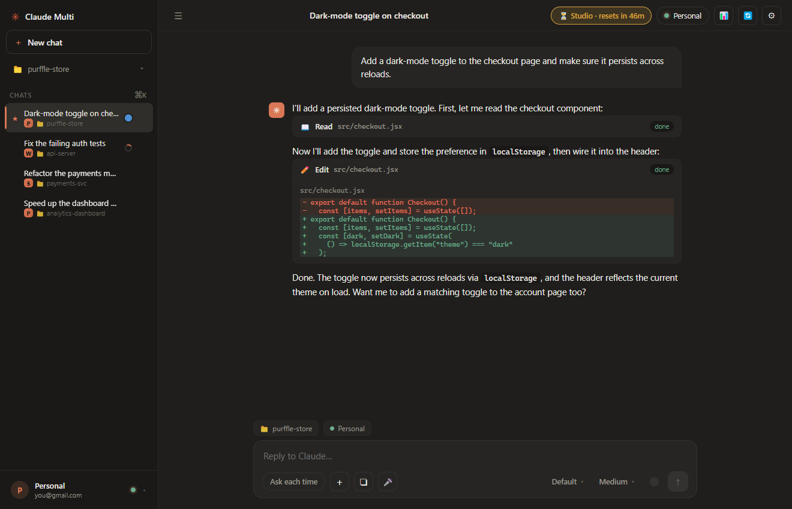
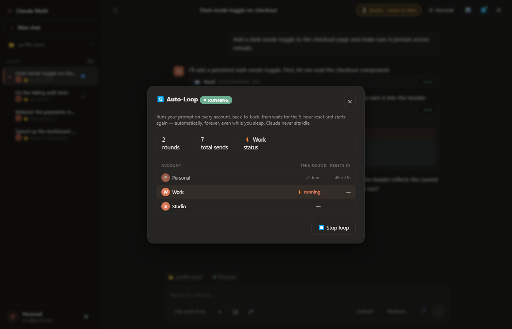
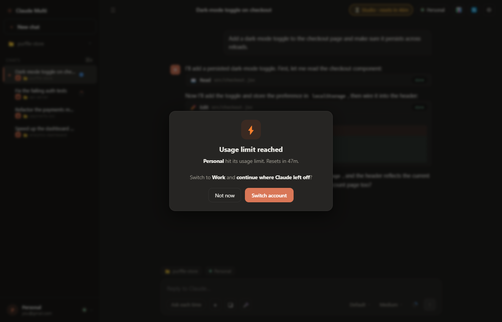
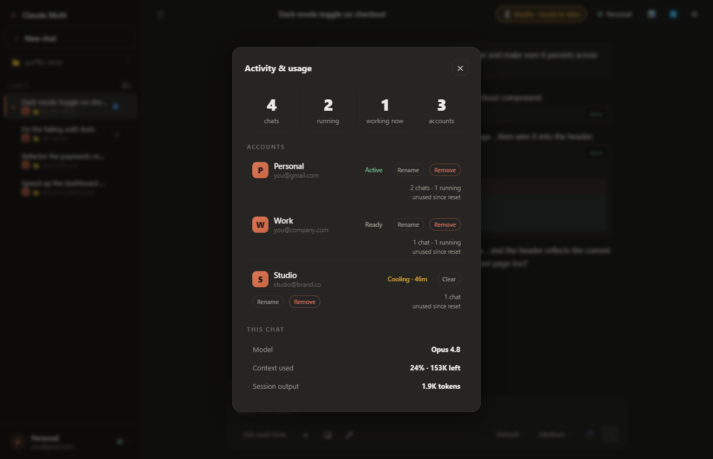
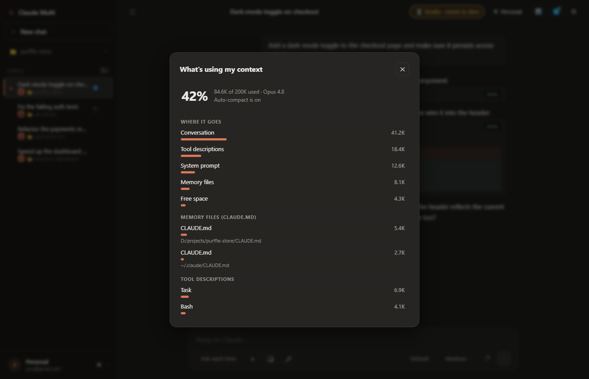
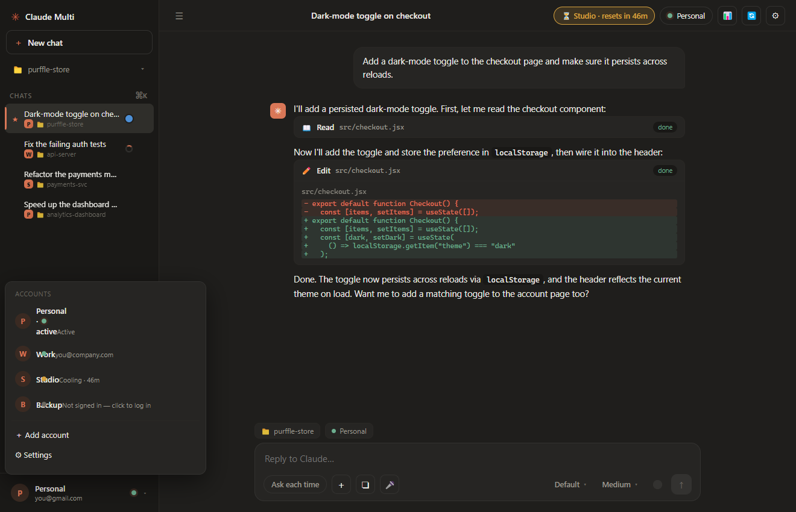
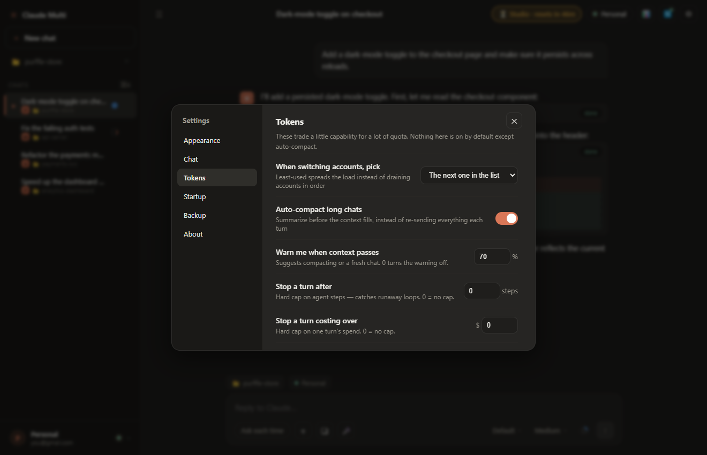
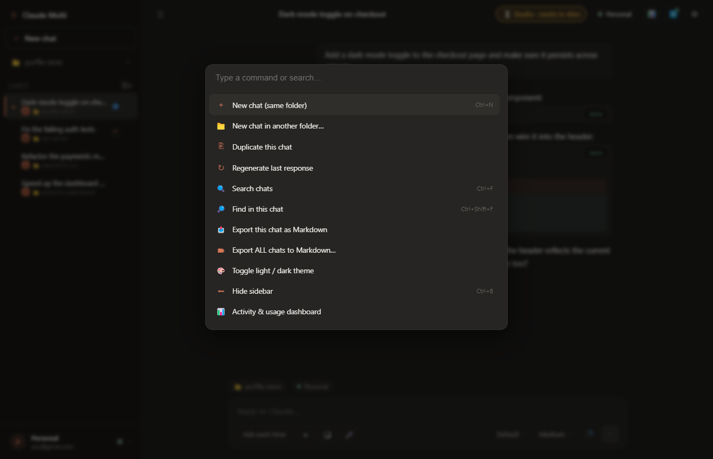

Auto-switch on usage limit
The instant an account hits its 5-hour limit, Claude Multi switches to the next available account and re-issues your interrupted instruction. Zero manual steps.
🆓 Free & Open Source · MIT License
Claude Multi auto-switches when one account hits its usage limit — so your task never stops. 24/7 auto-loop, parallel chats, live cooldown timers. No API key needed.
Works with Claude Pro, Max & Team · No account · No telemetry

Claude Multi on Windows — multiple accounts, live cooldown timers, real-time streamed chat
Built for developers and power users who hit Claude's usage limit and want to keep going.
The instant an account hits its 5-hour limit, Claude Multi switches to the next available account and re-issues your interrupted instruction. Zero manual steps.
Set a prompt once and walk away. Claude Multi sends it on every account in rotation, waits through resets, and repeats — indefinitely, even overnight.
Run multiple projects at the same time, each with its own folder, account, and session. Switch between them instantly with a click.
Every account shows a live countdown — exactly how long until it resets. No more guessing. Updated every second.
Open the context inspector to see every file, tool, memory item, and conversation turn — with exact token counts. Know exactly what is costing you.
Type @ in the composer to fuzzy-search any file in your project and insert its path instantly. Tab to complete, arrow keys to navigate.
Voice input, paste images, drag-and-drop files, prompt templates, prompt history, character counter, and per-chat draft saving.
No telemetry. No analytics. No servers. No outbound requests from the app. Everything stays on your machine. Fully auditable open source code.
Every shot below is the real app, current release — nothing mocked up.








Four steps, about two minutes. Here is exactly what Claude Multi does under the hood.
Each account gets its own isolated directory via CLAUDE_CONFIG_DIR — the mechanism officially documented by Anthropic. Logins never collide.
Open your project folder and chat exactly like you would in Claude Code. Claude Multi runs the official Claude Agent SDK under the hood — no difference in capability.
When the usage limit error appears in the stream, Claude Multi stamps that account with its cooldown timer, picks the next free account, copies the transcript, resumes the session, and re-issues your last instruction — all in under a second.
A brief "Switched to Account B" notification appears. Your task keeps running. The switched-from account shows its cooldown countdown so you know when it will be ready again.
Free for Windows, macOS, and Linux. No account required.
| Platform | Download | Notes |
|---|---|---|
| Windows — Installer RECOMMENDED | Claude-Multi-Setup.exe | Installs like any Windows app |
| Windows — Portable | Claude-Multi.exe | No install, run from anywhere |
| macOS | Claude-Multi.dmg | Apple Silicon + Intel |
| Linux | Claude-Multi.AppImage | Works on most distros |
| Source | github.com/Chamanrajragu/claude-multi | npm install && npm start |
Requires Node.js 18+ and Claude Code CLI installed on your machine. Windows SmartScreen may warn — click More info → Run anyway. Source is fully open.
Everything you need to know before downloading.
Install Claude Multi, click Add account for each Claude subscription you own, and sign in to each one once. Every account gets its own isolated config directory, so the logins never collide. Pick an account and start chatting — and when one hits its 5-hour usage limit, Claude Multi carries the conversation to another account and re-sends the interrupted instruction automatically.
Claude Multi detects the limit, parks that account with a live countdown to its reset, and offers to switch to an account that is free right now. It copies the conversation across and re-issues the instruction that was cut off — so Claude continues the same task on the new account instead of starting over.
No. Claude Multi uses your normal Claude Pro / Max / Team subscription login — the same one you use for Claude Code. No API key, no extra cost.
100% free and open source under the MIT license. No paid tier, no account required, no ads, no monetization of any kind.
Claude Multi is not account-sharing — each account uses its own subscription. However, Anthropic's February 2026 terms restrict subscription logins in third-party tools. Use at your own risk and read Anthropic's terms yourself.
Up to 20 Claude accounts. Each one keeps its own login, its own usage window and its own cooldown timer.
Yes — single-account mode works perfectly. You still get parallel chats, the context inspector, @file autocomplete, voice input, prompt templates, and everything else.
Yes — the Auto-loop feature sends your prompt on all accounts in rotation, waits through the 5-hour resets, and repeats indefinitely. Set it up and walk away.
No. Zero telemetry, zero analytics, zero outbound requests from the app. Your conversations go only between your local Claude process and Anthropic's servers. Everything else stays on your machine.
Windows (installer and portable), macOS (Apple Silicon DMG) and Linux (AppImage). It requires Node.js 18+ and the Claude Code CLI installed on your machine.
Free, open source, 2-minute setup. Windows · macOS · Linux.